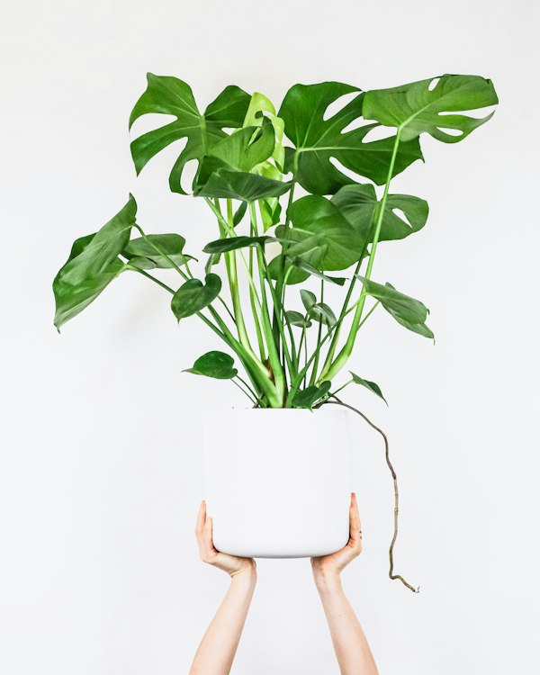

Tagline Filosofi
🌿
Tugas Akhir Pemrograman Web 1
Menyelami Alam: Makna, Filosofi Hidup, dan Seni Merawat Tanaman.
Ensiklopedia botani komprehensif yang memadukan keindahan ragam tanaman tropis, kearifan filosofis mendalam di balik setiap helai daun, serta panduan praktis perawatan ilmiah bagi para pecinta tanaman pemula maupun mahir.
16+
Spesies Terverifikasi
5
Kategori Botani
100%
Panduan Asli & Ilmiah

Monstera Deliciosa
"Bertumbuh tinggi tanpa menghalangi cahaya tunas di bawah naungan."
Katalog Botani Lengkap
Eksplorasi Ragam Spesies Tanaman
Telusuri jenis tanaman berdasarkan karakteristik daun, bunga, sukulen, maupun rempah herbal. Temukan filosofi simbolis dan tata cara merawatnya.
Memuat data tanaman...
Kearifan Alam Semesta
Filosofi Tanaman & Pelajaran Kehidupan
Tanaman bukan sekadar pemanis dekorasi ruangan. Di balik pertumbuhan setiap cabang dan akar, tersembunyi hukum alam yang selaras dengan perjalanan rohani dan mental manusia.
Hipotesis Biophilia: Keterikatan Manusia & Alam
Secara evolusioner, otak dan jiwa manusia dirancang untuk berdampingan dengan kehijauan flora. Merawat tanaman terbukti secara klinis menurunkan hormon kortisol (stres), meningkatkan konsentrasi kognitif, serta menumbuhkan rasa kasih sayang dan welas asih dalam kehidupan modern.
"Ketika kita menyirami tanaman, kita sesungguhnya sedang menyirami kelembutan di dalam sanubari kita sendiri."
Seni Wabi-Sabi: Keindahan Ketidaksempurnaan
Pada seni kerdil pohon bonsai, ranting yang meliuk bengkok dan bekas luka kawat pemangkasan bukanlah aib, melainkan bukti kedewasaan dan ketahanan menghadapi waktu. Filosofi ini mengajarkan kita menerima kerapuhan dan ketidaksempurnaan diri sebagai karya seni yang bernilai luhur.
"Kekuatan sebuah pohon tidak dinilai dari kemulusan kulit batangnya, melainkan seberapa kuat ia bertahan dari pahatan masa lalu."
Puspa Nusantara & Simbol Ketulusan Budi
Nenek moyang Indonesia menjadikan bunga melati sebagai Puspa Bangsa karena sifatnya yang harum semerbak meski berukuran mungil dan bersahaja. Berdampingan dengan pohon beringin yang melambangkan kerindangan mengayomi, tanaman mencerminkan cita-cita luhur gotong royong dan kesucian niat.
"Kebaikan sejati laksana aroma melati: tidak berteriak untuk didengar, namun wanginya menyejukkan siapa saja yang mendekat."
Dasar-Dasar Botani Praktis
4 Pilar Utama Seni Merawat Tanaman
Tanaman tidak membutuhkan "tangan dingin", melainkan pemahaman ilmiah yang tepat mengenai kebutuhan biologis alaminya.
01
Kunci Pencahayaan
Pahami perbedaan Direct Sun (matahari terik langsung), Bright Indirect (terang tersaring jendela), dan Low Light (teduh redup). Putar pot tanaman setiap 2 minggu agar tumbuh simetris ke arah cahaya.
02
Seni Menyiram (Finger Test)
Jangan menyiram berdasarkan kalender kaku. Masukkan jari tangan sedalam 2-3 cm ke dalam tanah. Bila terasa basah/dingin, tunda penyiraman. 90% kematian tanaman indoor disebabkan oleh kelebihan air (overwatering), bukan dehidrasi!
03
Porositas Media Tanam
Akar tanaman membutuhkan oksigen untuk bernapas. Gunakan media berpori dengan campuran sekam bakar, perlit, pumice, dan cocopeat. Pastikan pot selalu memiliki lubang drainase lancar di bagian bawahnya.
04
Nutrisi & Pemupukan (N-P-K)
Unsur N (Nitrogen) untuk kehijauan daun, P (Fosfor) untuk perakaran dan pembungaan, serta K (Kalium) untuk kekebalan penyakit. Berikan pupuk seimbang secara teratur dengan dosis sedang.
🩺 Panduan Cepat Diagnosis Gejala Tanaman
Kenali tanda-tanda stres pada tanaman kesayangan Anda sebelum terlambat:
| Gejala Fisik | Kemungkinan Penyebab | Tingkat Urgensi | Langkah Tindakan Solutif |
|---|---|---|---|
| Daun Menguning & Lembek di Bagian Bawah | Kelebihan air (Overwatering) / Genangan busuk akar | Tinggi (Kritis) | Segera hentikan siram, bongkar pot, potong akar hitam busuk, ganti media tanam baru yang porous. |
| Ujung Daun Kering & Rapuh Kecokelatan | Kelembapan udara rendah (Dry Air) atau air mengandung kaporit tinggi | Sedang | Gunakan humidifier / semprot kabut daun, serta endapkan air keran minimal 24 jam sebelum disiramkan. |
| Batang Tumbuh Kurus & Memanjang Aneh | Etiolasi (Kekurangan intensitas cahaya matahari) | Perlu Penyesuaian | Pindahkan secara bertahap ke area yang lebih terang dekat jendela agar fotosintesis optimal. |
| Muncul Bercak Gosong Kering pada Permukaan Daun | Sunburn (Terbakar sinar matahari siang langsung secara mendadak) | Sedang | Pindahkan ke area teduh berdifusi dan potong helai daun yang terbakar parah. |
Fitur Interaktif Cerdas
Temukan Tanaman yang Cocok dengan Karaktermu
Jawab 4 pertanyaan interaktif seputar kepribadian, gaya hidup, dan ruang rumahmu. Algoritma kami akan merekomendasikan tanaman pendamping hidup yang paling serasi.
Pertanyaan 1 dari 4
Kuis Karakter Botani
Bagaimana pola rutinitas kesibukan harianmu?
🎉 Tanaman Pendamping Karaktermu Adalah:
Monstera Deliciosa
Monstera deliciosa Liebm.
🌿 Mengapa Tanaman Ini Cocok Untukmu?
Kebutuhan Utama:
Kalkulator Cerdas
Kalkulator Interval Penyiraman Tanaman
Kombinasikan jenis tanaman, lingkungan tempat tinggal, dan kondisi musim untuk menghitung frekuensi penyiraman yang paling akurat.
Hasil Analisis Penyiraman
Siram 1 - 2 Kali Seminggu
Pilih parameter di samping dan klik tombol kalkulasi untuk melihat panduan spesifik.
Klinik Botani & Konsultasi
Punya Pertanyaan Seputar Tanaman Anda?
Sampaikan gejala tanaman Anda yang sedang sakit, pertanyaan mengenai pemilihan media tanam, atau diskusi filosofi alam.